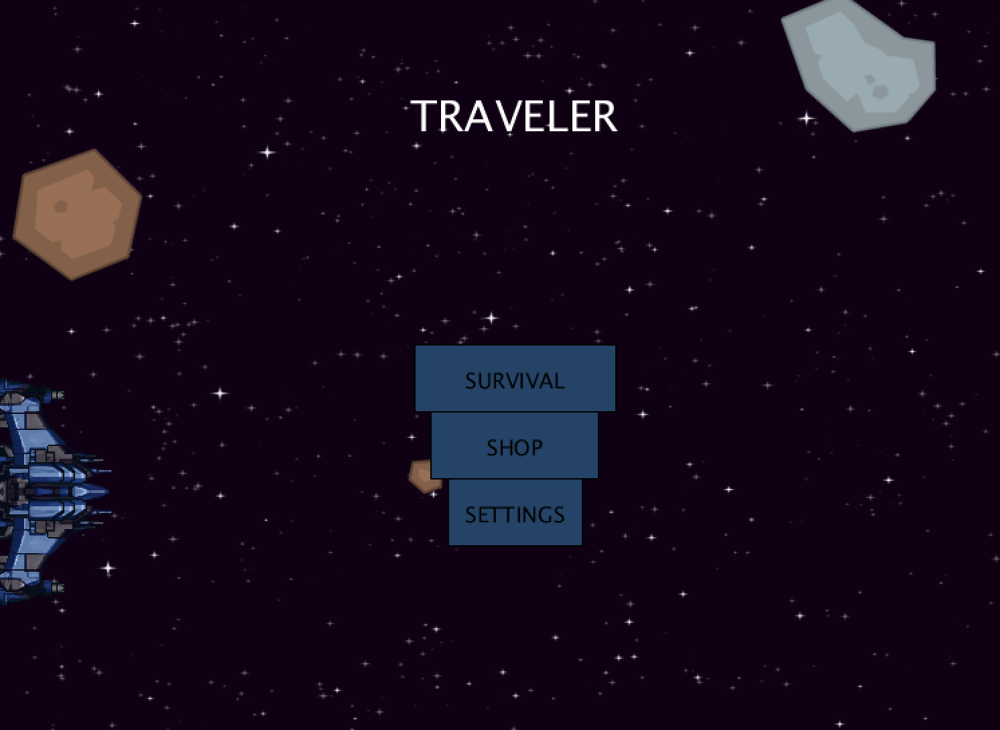

About Me
Recent Information Technology Honors graduate experienced in the following programs and libraries:
Python, MATLAB, PROTO.IO, CSS, ESP, PHP, Hadoop, HTML, JavaScript, MySQL, Java, Pandas, Numpy, SkLearn, Git and Graphviz.
Worked in multiple projects in cleaning, formatting, transforming data, and using various data mining algorithms to evaluate the results.
Deep knowledge of how to decide on the problem, dataset, solution, and schedule. Experienced in conducting analysis using Naïve Bayesian Classifier, Decision Trees,
Clustering, Sequential Pattern Discovery, and Multiple Linear Regression.
This program gave me oppurtuniy to develop game with friends using Processing(Java) enviroment.
Below you will see screenshots of my game from first year Game Development course.
When I am not busy with programming I challenge myself in chess tournaments.To play with me and other players click here
Download My Resume
Click to DownloadGame Development Project

This game is physics/survival-based game set in space.
The game feature multiple levels that progresses from easy to hard difficulty.
The main goal is simple, the player must navigate the avatar, which is a space pilot to see space pilot design click.here
{kind=link}
Main challenge the player will face is deciding exactly how they must accomplish this. Between the origin of the space pilot and the destination.
There will be environmental hazards and enemies the player must avoid in order to travel through space safely.
The player will be unable to fly the spaceship towards the planet. From the spaceship, they must eject the player inside a space pod.
The player decides at what angle and power to shoot the space pod from the spaceship.To see spaceship design click.here
{kind=link}
To see environmental hazards design click here
{kind=link}
For Meteors challenge design click here
{kind=link}
For Meteors challenge design click here
To see more mission planets click here
{kind=link}
To See My Data Analytics Projects https://github.com/oztarim